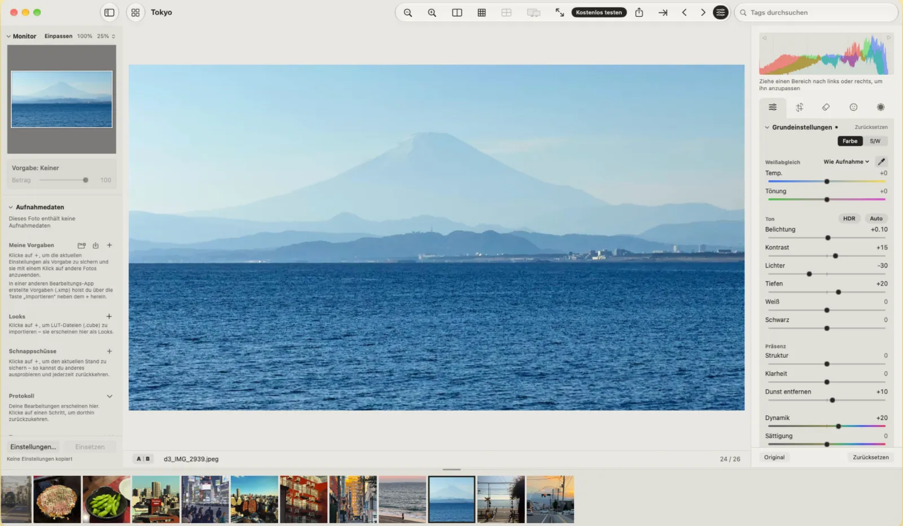

RAW
RAW-Dateien öffnen mit Farben und Helligkeit, abgestimmt auf die Kamera, mit der sie aufgenommen wurden.

132 Kameraprofile integriert
Fujifilm, Sony, Canon, Nikon, Hasselblad, DJI und iPhone – jeweils auf Farbe und Helligkeit abgestimmt.
Neue Kameras ohne App-Update
Die Einstellungen prüfen sofort oder wöchentlich auf ein neues Profilpaket; neue Profile gelten für die nächsten Fotos, die du öffnest.
Lichterschonende Modi berücksichtigt
Aufnahmen mit Canon Tonwert-Priorität oder Fujifilm DR200/DR400 öffnen mit der Helligkeit, die du an der Kamera gesehen hast.
Alle gängigen RAW-Formate
CR3, CR2, NEF, ARW, RAF, RW2, ORF, DNG, 3FR, IIQ und mehr. Auf dem Mac gilt: Kann macOS eine ganz neue Kamera noch nicht lesen, bearbeitet Butter Edit das eingebettete JPEG und sagt dir Bescheid.
JPEG, HEIC und mehr mit denselben Werkzeugen
JPEG, HEIC/HIF, PNG, TIFF, WebP und AVIF bekommen dieselben Regler, Masken und Presets wie RAW.
RAW-Editor ohne Import
Kostenlos laden und 30 Tage lang alle Funktionen gratis testen. Erfordert macOS 26 oder neuer. Windows 10 (64 Bit) oder neuer.